Case Studies & Success Stories of Rainwater Harvesting
Jagsa village, receiving only about 284 mm of rainfall annually, transformed their water availability through rooftop rainwater harvesting. Households reduced dependency on expensive tanker water, saving up to Rs 10,000 monthly. Farmers now irrigate pomegranate orchards on 3,200+ hectares, achieving an average annual income increase from Rs 1 lakh to Rs 5.5 lakh per hectare. Jagsa village in Rajasthan’s Barmer district is an excellent example of how a village receiving just 284 millimetres of rainfall in a year can manage its water sources. The village that was once struggling for even drinking water is now thriving with pomegranate farms. Huge dependence on groundwater tremendously depleted the water table of Balotra block in Barmer after 2007. It dropped to a depth of 34.77 metres below ground level in 2010.

A tank with Agor in Jagsa village:
“Before, we relied on water tankers costing a lot, but the rainwater harvesting tank made our family self-sufficient for drinking and irrigation The construction of the tank reduced the dependency on tankers and groundwater for the beneficiary. Households of four-five people who earlier depended on tankers could save up to Rs 8,000-10,000 per month and get water at their home premises. Villagers used the other tank in the farmland for irrigation. The National Agriculture Development Scheme was launched in the year 2007. In 2010-11, the state government’s horticulture department started a fruit production scheme. Only 16 farmers showed interest in it and in 2011, they began cultivating pomegranates on 32 hectares of farmland using water from the watershed tank scheme. The model was very successful; today, more than 1,125 farmers are cultivating pomegranates on 3,200-3,300 hectares across the Balotra block.” – Anchala Ram Ranchod Ram
Today I want to share with you an inspiring story of success. It’s a sort of rags-to-riches story. But this story doesn’t have to do with money (specifically); it has to do with the power of water. This story starts in 1975 in the Indian village of Raleghan Siddhi.
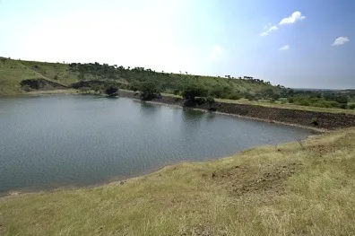The logical next step was to dig wells near the tank, however, digging wells takes money, and the villagers didn’t have very much. To deal with this problem Anna brought together 16 poor farmers that held continuous plots (plots adjacent to one another), and they dug a well that was to be shared among them. Half of the cost was offset by labor provided by the farmers, and Anna borrowed the other half for materials. This well provided a regular supply of water for 35 acres of land, and was the first of eight community wells constructed over the next two years. Once all of the wells were constructed (and there was a supply of water due to the water harvesting projects) they were able to irrigate 700-800 acres of land and had water year round! To bring even more water to the community gully plugs and contour trenches were built, and shrubs, trees and grass were planted along the hillsides all around the village. The village’s next task was to renovate an old percolation tank that had been built in the past. The tank was built with good intentions, but because of technical faults failed to hold water for more than two months, letting it seep out of the sides and be wasted. A percolation tank acts much like a nalla bund, holding a large amount of water and allowing it to slowly percolate into the soil. Money was donated by those who could give, and government grants were also received to support the project. Further, to help keep the soil permeable and help with percolation trees were planted around the tank. Once the tank was renovated it could hold 323,378 cubic meters of water! They were now well on their way to recharging their groundwater.
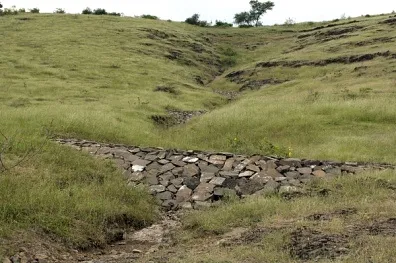One last project specifically related to bringing irrigation water to the Raleghan Siddhi was to lift water from a canal 3km away. There had been 100 other attempts to lift water from this canal by other people, and they all had failed, but Anna and the people of Raleghan Siddhi succeeded. How did they do what so many others couldn’t? Their success is attributed to the formation of the Krishna Pani Purvatha Society to oversee the project and to maintain it. The society provided leadership, an administration system and held people accountable for doing their jobs and following the rules. There are 260 members of the society, 11 of which are chosen to be part of a committee that meets regularly. They have rules and guidelines to decide how much each farmer is charged for electricity and water based on cropping patterns, and each farmer has to outline how much water they will require, and failing to give this information results in a rate increase. People are held accountable to do their jobs, and are disciplined for failing to do so. However, discipline is rarely required because everyone is working towards a common goal of a productive and healthy Raleghan Siddhi.
This drought-prone village increased irrigation coverage from 80 to 1,200 acres, enabling three crops annually worth Rs 60 lakhs. Rainwater harvesting led to afforestation, stopped rural migration by 85%, created employment, improved milk yield, and empowered women by reducing water-fetching burdens.
“Our village turned barren land into productive farms thanks to simple rainwater harvesting techniques managed by the community.”
Villagers in Kutch district built check dams and percolation tanks to conserve rainwater, which restored groundwater and turned barren landscapes into fertile lands. Agricultural production increased fourfold, enabling multiple crops per year and boosting economic prosperity with cooperative marketing initiatives. Gujarat has had success in community-led rainwater harvesting through a multi-pronged approach involving government, NGOs, and local communities. Initiatives like Jal Sanchay Jan Bhagidari have successfully built structures like check dams and percolation tanks, which improve water availability for irrigation and recharge groundwater. The Bhungroo system is a specific example where excess rainfall is stored underground for later use, and traditional methods like kunds have also been used successfully.
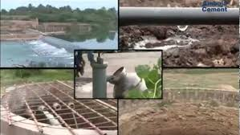Key factors for success:
- Community ownership: Initial success requires convincing the community, but once the benefits are seen, full cooperation is achieved, as seen in the Rajasamadhiyala project.
- Partnerships: Collaboration between government, NGOs like the Ambuja Cement Foundation, and the community is crucial for sustained effort.
- Integrated approach: Going beyond just building structures to include a "watershed plus" approach that addresses a wider set of issues leads to better results.
- Innovative techniques: The Bhungroo system, which injects excess water underground for later use, is a successful example of a technically sound and sustainable method.
- Government support: Initiatives are strengthened by government programs and financial support, especially during drought years, which helps build infrastructure like check dams, causeways, and farm ponds.
The city of Chennai began the experiment of rainwater harvesting 10 years ago. As water from underground sources was increasingly used and, conversely, rainwater absorption by the soil began to decrease, due to the expansion of the city and its pavement, intervention to restore the natural aquifer recharge cycle became urgent and the authorities reacted accordingly. Since 2001, rainwater harvesting systems began to be installed in existing buildings and required in new constructions. The recovered rainwater is injected into the subsoil through various mechanisms, from the simplest to the most complex, compensating for the extraction and thus restoring the level of the aquifers. Since the implementation of this strategy, the volumes of water have recovered and today the situation is relatively stable. The water that can be extracted is, in any case, slightly salty, due to the intrusion of sea water during the period when levels are falling. The need to reduce the presence of saline components in the aquifers is therefore one of the objectives that remains to be achieved in the strategy put in place. Most of the water collected is used to feed the underground deposits ; the remaining part is destined for other applications, industrial and domestic, which allows us to speak of process integration in the context of industrial ecology.
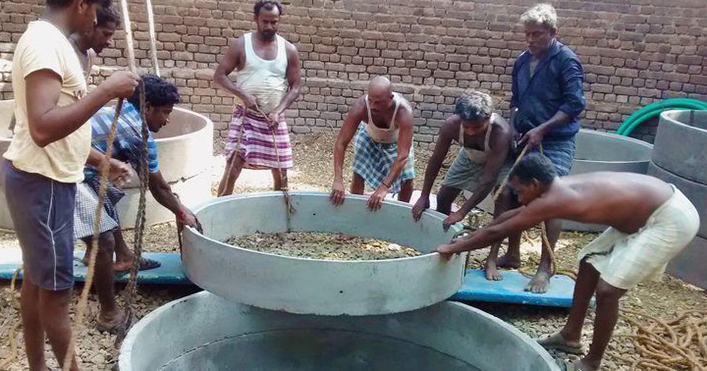Sixty years after its independence, India is a country facing enormous problems of resource management and land use planning. In Chennai, the rainwater harvesting initiative started slowly, driven by a group of activists at the height of the supply crisis. The local government had set up water trucks to distribute water around the city and, in the summer months, water was brought in by train from the city of Neyveli, 200 kilometers away. The first rainwater harvesting systems in Chennai were installed in buildings owned by private individuals who were sympathetic to the initiative, motivated by the relatively low cost and effectiveness of the solution. The government followed this first experience and rainwater harvesting systems started to appear in public buildings, schools and hospitals. The next step was the requirement to integrate this type of system into residential buildings, old and new. This initiative was unprecedented in India and perhaps in the world: connection to the water and sewerage system was made conditional on the installation of rainwater harvesting systems in every building. The strategy of setting up rainwater harvesting systems in Chennai can be described as a success story. The problem of depleting sources has been solved favorably and the solution found is within the framework of sustainability and respect for the environment. What is remarkable in this case is that the developed system restores a cycle of nature that had been interrupted by urban growth. It is a process that is halfway between the natural and the artificial, a kind of assisted recharging of aquifers, for which very little material is needed and which allows a profound change in the city and in the way of life of its inhabitants. Neighborhoods across Chennai implemented rooftop and recharge pit rainwater harvesting, which helped recharge aquifers, mitigate urban flooding, and stabilize groundwater levels. The project fostered community cooperation and increased water resilience in a water-stressed metropolitan area.
Images that shows the Farmers of jagasa village
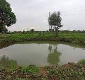 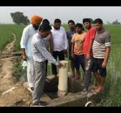 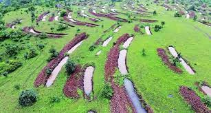Images that shows the Farmers of Ralegaon siddhi
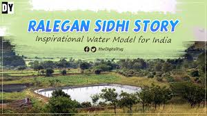 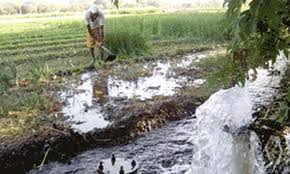Images that shows the chennai urban systems
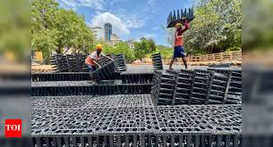 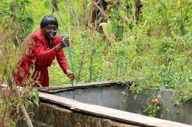
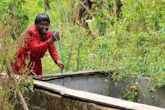